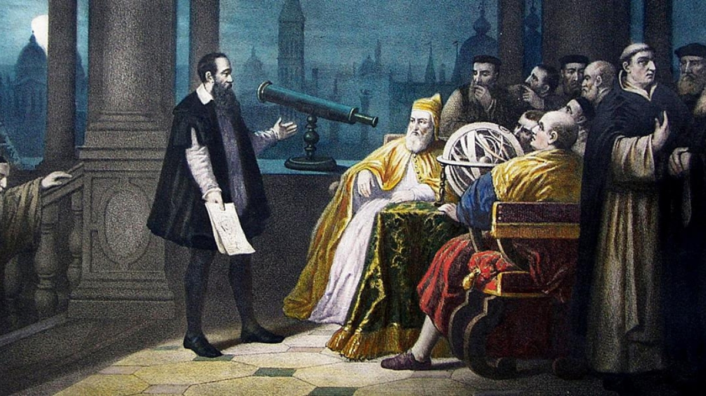

“The greatest enemy of knowledge is not ignorance, it is the illusion of knowledge.”
— Stephen Hawking
You should never feel pressured to express an opinion on everything. In certain times and situations, you may feel uncomfortable or reluctant to express thoughts about certain topics. If this is the case, you should refrain from contributing opinions, in accordance with your judgement. Ignorance on these topics will not affect others or yourself. However, when ignorance is crossed over into an opinion, an issue is forged. In this case, it is no longer ignorance, it is the illusion and lack of knowledge. This is a problem when it is a contribution to an important decision. Thus, ignorance is simply a lack of knowledge that isn’t an issue until it becomes a misconception when tested.
Examples of this have occurred throughout history. For instance, Galileo proposed the idea that the Earth revolved around the Sun around 400 years ago, which also happened to be correct. Yet, the people were quick to shut the idea down, believing that they knew the truth. The people weren’t just ignorant, but also closed-minded, being confident in their misconception. Socrates once said “I know that I know nothing.” This humble mindset shows truly why Socrates was so wise. He was great not because of what he knew, but because of how he used it by remaining grounded.
Ignorance in political decisions and opinions is a common example of these ideas in contemporary society. It is completely understandable to isolate oneself from politics in some areas, or even as a whole. But if you are going to contribute a decision or opinion, it should be well judged and under your own true beliefs. Otherwise, certain results may detriment your personal welfare. Sadly, division attempts to force out the idea of being in the middle. But truthfully, you don’t need to pick a single side, you can pick as many as you want in different ways and situations.
With all of this being said, not knowing isn’t a problem, but not knowing that you do not know something is. When you bury yourself in a hole of your opinions and ideas, you’ll never recognize differing ideas that may be more according to your judgement. You can only get out of that hole and grow when you listen, learn, and consider ideas from others. You should listen, examine, and then judge. When you do, the benefits will be greater than any before. Thank you for reading Social Science 43, and have an exceptional day.